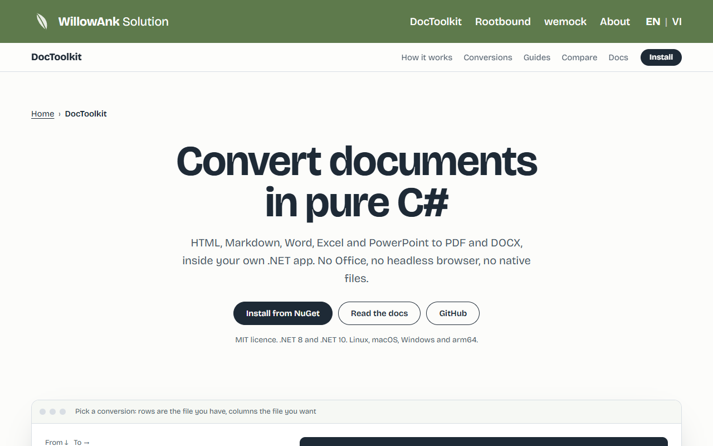
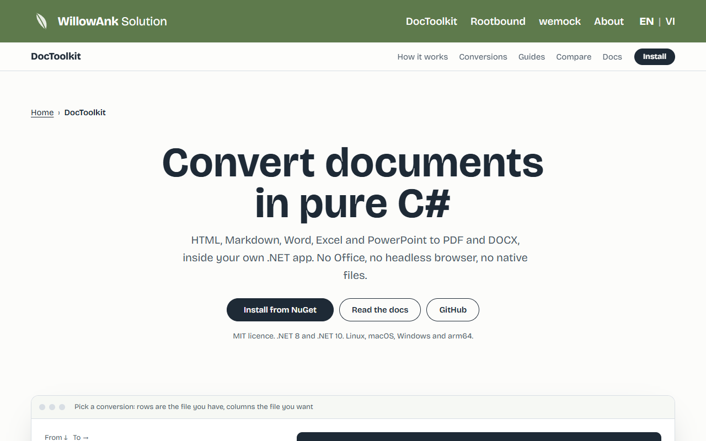
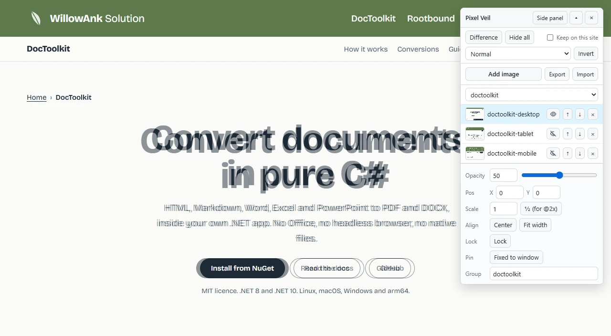
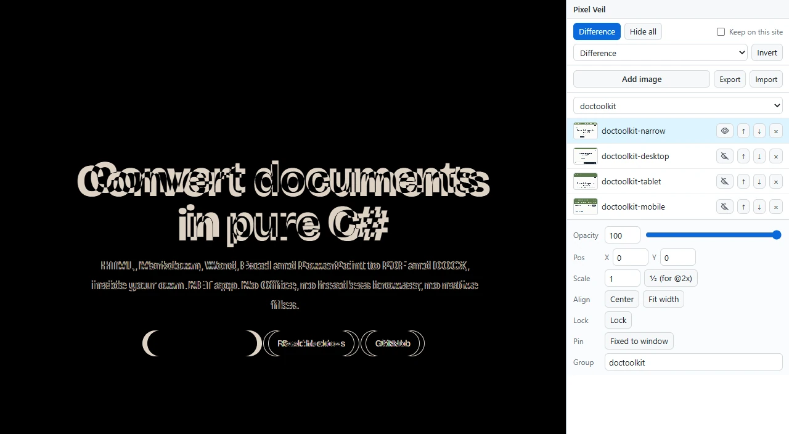

Lay your design over the page you built.
Pixel Veil is a free Chrome extension for front-end developers. Drop a design export on any page, line it up, and every pixel that disagrees shows.


Drag the line, or use the arrow keys. This is a real page and a real design export, blended here in your browser the way Pixel Veil blends them. In Difference view, matching pixels turn black: the heading sits 6 px low, the paragraph 4 px right, and one button is too wide.
Everything you check by eye, checked by the pixel
Any number of layers
Desktop, tablet and mobile designs side by side, kept per site. Free, every one.
Four ways to compare
See-through, Difference, Multiply and Screen, plus Invert. Difference is the fast one.
Line it up fast
Drag, nudge with the arrow keys, Center, Fit width, and edges that snap to the page.
Groups
Name a group per page, say login or home, and show one at a time.
Pinned layers
Pin a sticky header's design to the window; the rest scrolls with the page.
Side panel
Move the controls into Chrome's side panel so they stop covering a narrow page.
Export and import
One .json file holds a site's layers and images. Take it to another site or machine.
Keyboard first
Shortcuts for show, hide and opacity. Every control has a name a screen reader reads.


It asks for as little as it can
Many extensions can read every site you visit from the moment you install them. Pixel Veil asks one step at a time, and you can always see which step you are on.
- 1
You install it
It can read no site at all. Chrome shows no site access for it.
- 2
You click its icon on a page
It may draw on that one tab, until you leave the page. This is Chrome's
activeTab. - 3
You tick "Keep on this site"
Chrome asks you for that one site, so your layers come back after a reload. Untick it and the permission goes back.
- Your images and settings stay in your browser. Pixel Veil sends nothing anywhere and has no account.
- The page cannot read your designs: the layers live in a closed shadow root, and fake key presses are ignored.
- Every line is open source under MIT.
Install
Pixel Veil is waiting for its Chrome Web Store listing. Until then, build it from source; it takes about a minute.
git clone https://github.com/Ank-KhoaHo/pixel-overlay
cd pixel-overlay
npm ci
npm run build- Open
chrome://extensionsand turn on Developer mode. - Click Load unpacked and pick the
.output/chrome-mv3folder. - Pin Pixel Veil to the toolbar, open your page, and click its icon.
Shortcuts
| Keys | What they do |
|---|---|
| Alt+Shift+V | Show or hide Pixel Veil, like the icon |
| Alt+Shift+H | Hide or show all layers |
| Alt+Shift+. and , | Active layer 10 % more solid, or more see-through |
| Arrow keys | Nudge the active layer 1 px; with Shift, 10 px |
| F2 on a layer | Rename it |
Change any of them at chrome://extensions/shortcuts.
Questions
Is it really free?
Yes, with no layer limit, no account and no paid plan waiting behind a button. It is MIT licensed, so you can read and change every line.
Does it work on localhost and local files?
Yes. On http://localhost it works
like any site. For file:// pages, turn on "Allow access to file URLs" in the extension's details;
Pixel Veil opens a page that shows how.
Why can't it draw on some pages?
Chrome does not let any extension draw on its own pages,
such as chrome:// and the Chrome Web Store.
What about Firefox and Edge?
Edge takes the same build as Chrome, though nobody has tried it there yet. A Firefox build exists for Firefox 140 and later; it passes Mozilla's linter but has not been run in Firefox yet.
Why "veil"?
A veil is thin enough to see through. Lay it over the page and the only things that stand out are the ones that should not.